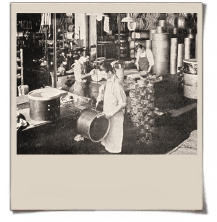

Friedrich Gretsch, de 27 años, quien emigró desde Alemania a los 16 años, abre una pequeña tienda de música en Brooklyn, Nueva York, fabricando banjos, tambores y panderetas.
Nuestra Historia
Aunque "El Gran Sonido Gretsch" no ha cambiado a lo largo de los años, los tambores Gretsch han presentado una variedad de diseños de distintivos icónicos. Cada distintivo es único y de alguna manera se ha convertido en un clásico con el tiempo. Aquí hay una visión general de los distintivos utilizados en los tambores Gretsch a lo largo de la historia de la compañía.
1883 - Fábrica de Gretsch
1916 - Brooklyn, Nueva York
La compañía se traslada a un edificio de 10 pisos en el 60 de Broadway en Brooklyn, Nueva York.
1918 - Capas Múltiples

Fred Gretsch desarrolla un revolucionario proceso de laminación de tambores de múltiples capas que resulta en el primer aro de tambor "libre de deformaciones" del mundo.
1920 - El fabricante más grande
Gretsch es reconocido como el fabricante más grande de instrumentos musicales en los Estados Unidos.